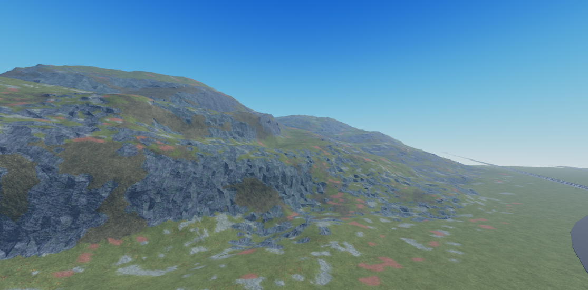

The mountain adjacent to Pen Security Headquarters is a prominent geographical landmark and an important feature of the organisation's surrounding landscape. Rising above the surrounding terrain, it provides a distinctive backdrop to the headquarters and has become closely associated with the identity of Pen Security.
Geography and Location
Situated immediately beside the headquarters, the mountain overlooks much of the surrounding area. Its elevated position offers extensive views of the neighbouring landscape, making it a recognisable landmark for personnel and visitors alike.
Significance to Pen Security
Beyond its geographical importance, the mountain holds considerable symbolic value. Its imposing presence represents the stability, permanence and protective principles upon which Pen Security was founded.
It remains an enduring feature of the Pen Security grounds.